Valley: the guide
How the valley works, what every button does, and why things happen. Use the index on the left or search above.
Nothing in the guide matches that search.
What Valley is
You are a king with no land, standing on the Three Hills where Plovdiv will one day be. It is the Neolithic, the time before metal. There are berries on the bushes, a river across the plain, oak woods and pine on the heights, reeds by the water, and stone lying about. Nobody knows how to make anything beyond what their hands can gather.
Valley has no technology tree, no score and no ages to reach. Nothing is unlocked because a timer ran out or because you paid for it. One rule runs everything:
Needs lead to ideas. Ideas lead to solutions, in the form of objects and techniques.
So the culture you end up with is a consequence of the land and what its people needed, not a set you pick from a menu. Their houses, tools, weapons, dress and beliefs all grow from what was around them and what they had to solve.


The aim
Fill the Plovdiv valley with your people and unite it under the crown.
You do it by founding camps and letting peoples holding the mandate found their own; by keeping camps from breaking away, or inviting them back; by winning strangers over with trade, gifts and favour; and, when it comes to it, by taking their camps. There are no points. The King panel says where things stand: how much of the dry ground the realm's grants cover, how many camps answer to the crown, and how many known camps stand outside it.
How a reign can end, from the fullest success to the worst:
| Ending | When |
|---|---|
| One people fills the valley | No free ground is left that could feed a camp, and every camp is of your people: the first settlement, its daughters, and branches that broke away and came back. |
| Many peoples, one crown | No free ground is left, and every camp answers to the crown, though not all are of one people. |
| The king lays down the crown | You retire, or end the reign from the end screen. |
| No camp answers to the crown | Every camp of the realm is lost, taken, broken away or abandoned. |
A full valley split between realms is not an ending: it is a standoff that ends in war or in union. See Winning and losing and Land hunger.
The rules of the world
These hold everywhere in the game and explain most of what you will see.
| Rule | What it means in play |
|---|---|
| No cheats | Everything is decided by what exists at that moment: the people, the stores, the ground, the weather. Nothing is conjured. Even the crown's gifts come out of real stores or real tokens. |
| Knowledge is seen, not given | You learn about strangers only when someone sees them. A raider leader's name is learned from the fallen after a fight. |
| Councils decide | Once a camp has a council, it runs its own jobs, building and supply. You set rules and can override some things, but the camp acts on its own needs. |
| Free time makes ideas | People out of work by day, and everyone in the evening lamplight, think. No free time, no ideas. |
| Distance matters | Loaded people walk at half speed. Far camps feel the crown less, and help takes time to arrive. |
| Saves are kept | New features are added as optional data, so older saves still load. |
Families, not persons
Every figure walking the map is a family. Its working man is the one who gathers, builds, thinks, answers the levy and fights; his wife, children and elders are not shown. A family eats and needs room as one unit. Counts everywhere are of families: a council forms at 6, a camp may found new camps at 12. Only the culture card gives a head count, as an estimate (about N people).
- Young people are counted apart until they come of age at 15, then set up a family of their own.
- When the head of a family dies, a grown son (10 or older) takes over and the family carries on. With no grown son, the family ends: the widow and children join their kin.
- One hut icon is a cluster (huts for 3 families; solid houses for 4), so the map doesn't fill with roofs.
Time: a year has four seasons of 12 days each, so 48 days. Evening and night pass in about a second behind a fade ("Night passes"). Everything in them still happens: work by firelight, ideas, drill, food eaten. Orders you give late in the day are carried on at dawn.
The screen
The map fills the middle. Everything else opens and closes from round gold icons on its edges. Tap an icon to open its panel; tap it again to close it. On a computer the panels open beside the map, one on each side; on a phone they slide up over it (see On a phone).
| Where | Button | What it does |
|---|---|---|
| Top bar | Pause, 1x, 3x, 5x | Game speed. 5x is for when things run themselves. |
| Top bar | Skip season | Fades out, runs to the next season or the next important event (a battle, a disaster, a people forming, a war, an ending), and fades back in. |
| Top bar | Continue | Picks up the game saved automatically in this browser, on whichever map it was played. |
| Top bar | Save / Load | Downloads the game as a file, or loads one. |
| Top bar | Map | Chooses the map to play (see Maps). |
| Top bar | БГ / EN | Switches between English and Bulgarian. |
| Top bar | ? | Opens this guide in a new tab. |
| Map bottom | Settle / Found (hut and flag) | Settle your first camp where the king stands; after that, found a new camp of your people. Greyed out when the ground there can't hold a camp. Same as Settle here / Found camp here in the camp panel. |
| Map bottom | Explore (eye) / Gather (basket) | Explore: taps only walk the king. Gather: taps on a resource set him to work it and carry the load home. Tap the icon to switch. |
| Map corner | −, +, Me | Zoom out, zoom in, and centre on the king. |
| Map corner (computer) | Marks, Shadows | Resource marks and shadows on or off (see Map marks and shadows). On a phone they are in the ☰ menu. |
| Map corner (zoomed out) | Peoples / Loyalty / Plain | Colours the land when zoomed out, once families are shown as counts. Peoples: gold for your people, teal for other peoples loyal to the realm, red-brown for camps outside the realm as they were when last seen. Loyalty: realm camps from green (devoted) to red (defiant). Plain: no colours. Only land you have uncovered is coloured, and outside camps appear only once someone of the realm has seen them; what you see of them is from that time. |
| Map | Solid and dashed lines | The solid line is a camp's granted land, which is fixed. The dashed line is how far it reaches to work, which grows. |
| Map | Families or counts | Zoomed in, every family is drawn. Zoomed further out, each camp shows a count instead and the land is coloured. |
| Stores band | Red numbers | That store is short. |
On a phone
On a phone the game fills the screen and the page never scrolls. The map takes the space; the panels come to you.


| Part | What it does |
|---|---|
| Top bar | The date and time, Pause/1x/3x/5x and ☰. Continue sits in the bar when there is a game to pick up. |
| ☰ menu | Skip season, the counts of families, camps and peoples, БГ/EN, the guide, Save, Load, Map, Marks and Shadows. |
| Stores line | The selected camp's stores. Swipe it sideways to see them all. |
| Icons | The same icons as on a computer, on the map's edges. Each opens its panel as a sheet sliding up over the lower part of the screen, so the top of the map stays in view. |
| Sheets | Scroll inside the sheet. Close it with ✕ or the panel's own Close, or tap its icon again. Only one sheet is open at a time. |
| Settle and Explore/Gather | At the bottom of the map, always in reach. |
| Message line | Under the map: the latest thing that happened. |
| Touch | Tap to walk or gather, drag to pan, pinch to zoom. |
Map marks and shadows
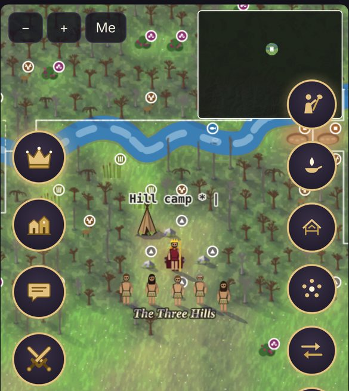
Every resource you have seen and not used up carries a small round mark with a white ring, so it can be picked out among the trees. A spent patch loses its mark until it grows back. Only surface resources are marked: ore and ochre are never marked, so nothing hidden is given away.
| Mark | Resource |
|---|---|
| Purple, berries | Berries (food) |
| Gold, dot | Tended plots (food) |
| Blue, fish | Fish (food) |
| Brown, antlers | Game (hides, and meat) |
| Blue, drop | Spring (water) |
| Grey, triangle | Stone |
| Brown, square | Clay |
| Olive, stems | Reeds and tussock (fibre) |
| Grey, grains | Salt |
Shadows are the shadows under trees, rocks and people, and the shading painted into the ground on slopes and under forest. With shadows off, the sprites cast none and the ground's dark patches are softened, which makes marks and people easier to see. Marks and Shadows are switched in the map corner on a computer and in the ☰ menu on a phone.
Your first camp

- Walk the land. You start in Explore mode (the gold eye icon at the bottom of the map): taps on the map walk you there.
- Choose your ground. A camp needs land that will feed 8 families, with water and wood. Reeds give fibre for huts. Stone, clay and mud nearby decide what your people can build later. Where you settle is the first choice that shapes their culture.
- Press Settle (the hut-and-flag icon at the bottom of the map). This becomes your capital (your seat), and its people are your first people. The icon is greyed out where the ground can't hold a camp.
- Gather. The mode icon switches to Gather (a basket). Tap berries, water or trees: the king walks over, works with the king's tool, and carries the load home. The round marks show where resources are.
- Build the Fire (5 wood) in Build. Nobody stays without a fire.
- Build huts, made of what your land gives. Each kind is shelter for 3 families, and one hut icon is a cluster of them. Wandering families only stay where there is room.
Your camp builds its own kind first: the one its land is richest in, which the culture card names. If its stores can't pay for that, it builds whichever kind they can. Each hut is drawn as the kind it was built from.Hut Made of Hide tent 6 wood (poles) and 3 hides Half-dug stone hut 6 wood and 6 stone Daub round hut 6 wood and 4 clay Reed house (grass or reed) 8 wood and 4 fibre Bark lodge 12 wood - Wanderers arrive at dawn if there is room and food. Next wanderer under Work says what is holding the next one back.
- At 6 families, the people name their camp after the village whose land it holds (the first camp on the Three Hills becomes Plovdiv), and the people take that name too. This happens whether or not you have formed a council.
- Form the council once you are ready to step back (next section).
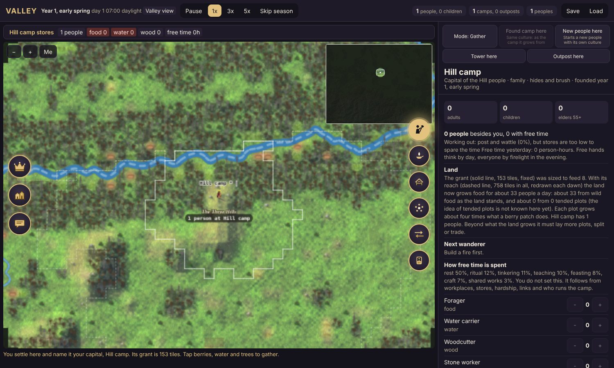
Handing over to a council
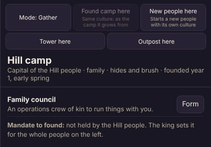
When the council forms:
- The camp gets its real name from the Bulgarian register of the village whose land it holds (for example Plovdiv, Пловдив). You can rename it later with the pencil beside its name. Renaming the capital renames its people.
- The people get their name and their culture card begins.
- The council runs the jobs and builds to the best way it knows, and decides its own supply.
You keep: thinkers on ideas, building yourself, taking the jobs back, the camp's rules, the realm's rules, supply overrides, the mandate to found, and the crown's help.
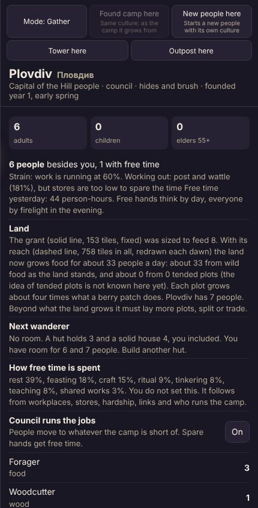
Work (person with a tool)

| Item | What it does |
|---|---|
| Families, young, old heads | How many families live in the camp, how many young people have not yet set up families of their own, and how many families are headed by a man of 55 or more. Each family's working man works, answers the levy and fights. |
| Next wanderer | What is holding back the next arrival: no room, too little food, or not yet dawn. |
| Job rows, − and + | Move people on or off a job (forager, water carrier, woodcutter, reed gatherer, stone worker, hunter, ore gatherer and so on). A job only appears when its resource is visible inside the camp's land. Anyone without a job has free time. |
| Council runs the jobs | On: the council moves people to whatever is short. Off: you place them yourself. |
| Thinker | A person set to think all day about an idea already being perfected (set from Ideas). |
Ideas (oil lamp)
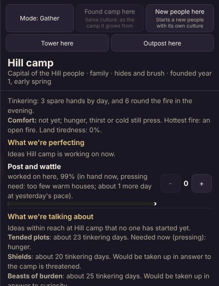
An idea needs a reason (a need felt now, a reward for the maker, or curiosity fed by surplus), the means to try it (the right materials to hand), and free time (people out of work by day, and everyone in the evening if there is light).
| Section | What it shows |
|---|---|
| What we're perfecting | Ideas in hand, why, and progress. + and − add or remove a thinker: a spare person who thinks about it all day. This is how you steer a camp. |
| What we're talking about | Ideas within reach that nobody has started. |
| What we know | Everything worked out, and how. Ideas also travel along supply links to other camps, if sharing allows. |
| The need | An idea that may follow | The solution |
|---|---|---|
| Huts leak warmth in frost | Wattle and daub, or laying dry stone | Solid houses that hold 4 |
| Little timber, stone everywhere | Laying dry stone | Low fieldstone walls that don't burn |
| Heavy loads carried far | Carrying straps, then yokes | More per trip |
| A river in the way | Rafts, later boats | The far bank |
| Food spoiling | Pots, then a kiln | Fired pots keep food |
| Ponies on open ground, and far to go | Riding | Herders, scouts and messengers sit astride |
| Leggings chafe and ride up astride (or long cold journeys) | Sewn trousers, from soft hide or woven cloth | Trousers for men; women keep skirts and dresses, the early European way; the card draws them |
Build (roof frame)
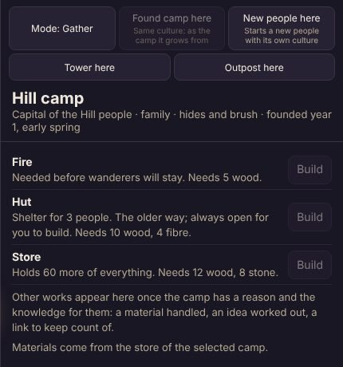
Each entry shows its cost. The list grows as ideas are worked out and new materials are handled: fire, huts, stores, houses (the best wall your people know: wattle, dry stone and others), drying racks, kilns, plots, wells, towers and forts. A council builds on its own; you can still build anything yourself, including older kinds.
Forts matter for war: a fort is where levies muster and where the standing army stands. Towers watch the land around them for raiders.
Settings (council round a fire)
| Setting | Choices and effect |
|---|---|
| Family council | Form at 6 families: the camp starts governing itself. |
| Who decides | Council or chief. A chief acts faster and harder: hoards under strain, and in tension may take from neighbours by threat. A chief-led camp is less loyal to the crown. |
| Sharing the store | How food and goods are shared inside the camp (for example to all, or by rank and kin). It shapes who sends what along supply links. |
| Levy | The share of adults this camp owes when the crown calls (none, 1 in 10, 1 in 5 and so on). The levy share also drills at home in the evenings. |
| Who may learn | Who is allowed to work on ideas. |
| Share knowledge | Whether ideas pass to linked camps. |
| Rename | The pencil beside the camp's name. |
At the top of Settings, for camps of the realm, is From the crown.
Supply (two arrows)

Every other camp is listed. Each link carries goods both ways if both councils allow it. Each council decides to export, import, both, or neither, from its own needs: a camp short of food stops sending, a chief hoards, a camp that shares by kin gives to kin.
| Button | What it does |
|---|---|
| Council decides | Leave the link to the two councils. |
| Free exchange | The king's override: goods flow freely both ways on this link. |
| Mediate | Appears on a link with bad blood between two camps of the realm. See From the crown. |
Card (portrait)
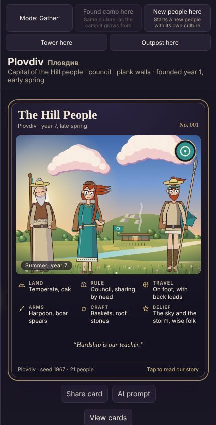
The selected camp's people: land, rule, travel, arms, craft and belief, with a picture drawn from what they use. Tap the card to read their story in their own words. AI prompt writes a description you can paste into an image generator. View cards turns through every people in this game.
From the crown

At the top of a realm camp's Settings, and as buttons in the War tab's Threats list. Every tool is paid for from something real, and the council still decides for itself.
Where the crown's means come from, in order: the royal store at the seat (tax paid in kind), then the seat's own stores down to one day's keep, then tokens from the bank. The section shows how much food the crown can give right now.
| Tool | Cost | Effect |
|---|---|---|
| Send relief | The goods the camp is short of, from the crown's means; or bought at twice their value with tokens from the nearest camp with spare (that camp keeps the tokens) | Carriers walk it there (delay by distance). The request is met, loyalty +5, the camp's bad blood eases by 10. If it can't be paid, the reason is shown. |
| Honour | 15 tokens, paid into the camp's own purse | Loyalty +10; only +3 if honoured again within half a year. |
| Mediate | 20 tokens, or 20 food | Bad blood between two of your camps −20, and a little loyalty for each. (On the Supply row.) |
| Invite back | 20 tokens, or 30 food | For a camp that split away. The gift eases bad blood by 20; if what is left is under 30 and its trust isn't broken, it rejoins at loyalty 40, keeping its own people and ways. Otherwise it says why. |
King's commands
At the top of the right panel. The king is a person on the map: these act where he stands.
| Command | What it does |
|---|---|
| Mode: Gather / Explore | Gather: taps on resources set the king to work. Explore: taps only walk. |
| Settle here | Found your first camp, the capital. |
| Found camp here | A new camp of the existing culture: it joins your people and grows from the camp nearest it. It must lie beyond other camps' granted land. |
| New people here | Begins a new people with its own culture, which you nurture by hand until it has a council. |
| Tower here | A watch tower: it sees raiders coming. |
| Outpost here | A small work crew beside a resource on ground that can't feed a camp; its parent carries food and water to it. |
| Begin again here | Only when you have no seat left: starts a new people here, which becomes your seat. |
King settings (crown)

| Setting | What it does |
|---|---|
| Scope | Apply the rules to the selected people or the whole realm. Your choices are kept as defaults for new camps. |
| Rule, economy, learning, sharing | The same camp rules as in Settings, set for many camps at once. |
| Supply | Council decides, or free exchange for the whole scope. |
| Tax | None, light, fair or heavy (0, 5, 10 or 20% of a season's gains). See Tax. |
| Mandate to found | Give or withdraw a people's right to found new camps on their own. Without it, only you found camps. |
| Realm stage and overview | How far the realm has come (for example, whether it uses tokens), tension and governance across camps. |
| You have no seat | Appears only when no loyal camp is left: Begin again here or Retire. |
Military settings live in the War tab.
Settlements (houses)
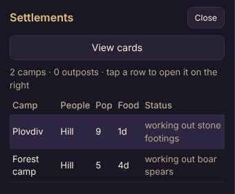
A table of every camp: its people, population, days of food, Loyal (its loyalty to the crown in a word), and what it is doing. Camps outside the realm show own realm. Tap a row to select the camp. View cards opens the carousel of this game's peoples.
Messages and the chronicle
Messages (speech bubble) is the running log: arrivals, ideas, requests, warnings, battles. Important events also go into the chronicle, the people's long memory, which Skip season stops on and which the end screen draws from. Battle lines have a Report button for the full account.
Loyalty
Each camp of the realm has a loyalty to the crown from 0 to 100, shown in the camp header and the Settlements list. It drifts 6% a day toward a target:
| Factor | Effect on the target (base 60) |
|---|---|
| Distance from the seat | −2 per km beyond 5 km, up to −30 |
| Same people as the capital | +15 (a different people: −15) |
| Mandate to found | +10 |
| Ruled by a chief | −10 |
| Protected by a fort | +10 |
| The king visited in the last 12 days | +15 |
Events push it directly: a levy −3 (−8 at harvest); help from the capital +3; relief +5; honour +10; fair tax on a far or short camp −2, heavy tax −6; taxed while hungry −2; soldiers' wages paid home +2, unpaid soldiers sent home −5.
Below 20 a camp is defiant: it refuses the levy. Below 40 it may leave the realm when it breaks a bond with its parent. Soldiers are only hired from camps at 40 or more.
Bad blood (grievance)
Grievance is between two camps, from 0 upward, and fades over time (faster between kin and trading partners). It is held by a whole people: a new camp of theirs inherits the worst of it.
| Cause | Bad blood |
|---|---|
| An unanswered request while the other had spare | +8 |
| Giving with nothing back | +3 |
| Theft or taking by threat | +25 |
| A broken bond | +25 |
| Different peoples within 10 km | +0.3 a day |
| A raid on us from their camp | +25 if it succeeds, +12 if beaten off |
| Taking a camp | +40 with the camp its people fled to |
| Land hunger | +10 a season (+20 if also hungry) |
| Heavy tax | +5 toward the capital |
At 80 or more between two camps of the same realm, a civil war can start.
Tension and splits
When a camp asks a partner for food, water, wood or stone and the request goes unmet, tension climbs day by day. Splits now take two steps, and the crown can step in before either.
A camp that has split keeps its new people's name even if it comes back, but the game remembers where that people came from (its root). Higher tension in chief-led camps can lead to taking from neighbours by threat.
Tax, the royal store and the bank
- Rates: none, light, fair, heavy: 0, 5, 10 or 20% of what a camp gained over the season, collected at the change of season.
- Hungry camps are exempt but lose 2 loyalty for being asked.
- Before tokens: tax goes in kind (food, wood, stone, poles, straw, hide, fibre; up to 300 of each) into the royal store at the seat.
- Tokens: once the capital's exchange has grown far enough (tallies and writing), goods are valued and tax is paid in tokens into the bank.
War in short
Peace is the normal state. Nobody fights you unless someone comes for you or you march; a culture is only marked warlike by what it does. The rest of this part is the detail; this is the shape of it.
Who can come for you
| Who | When | More |
|---|---|---|
| Raider bands | Only if you turn raiders on (War, Watch). Off at the start of every game. | Raider bands |
| Settled strangers | A band that took one of your camps lives there as its own people. Its chief raids you, and once it is land-hungry and has the numbers it marches. | Settled strangers, Land hunger |
| Your own councils | When bad blood between two camps of one people reaches 80. The king does not start or stop it. | Civil war |
Defend
- See them coming. Build towers at the edge of your land (Tower here). A tower sees about 6 km and passes the alarm by beacon to towers and camps within 15 km, so defenders are not caught unawares.
- Set a levy. In War, set the realm's levy (none, 1 in 10, 1 in 5), or a camp's own in its Settings. The levy share drills in the evenings and reaches basic training in about a year. Townsfolk who are not called still fight at home with their best tools.
- Build a fort once your people know Palisades (Build tab, 20 wood and 12 stone). Camps within 12 km, or joined to it by supply links, garrison it in turn, are protected by it (+10 loyalty target) and answer its call to arms.
- Pay soldiers once the capital's exchange reaches tokens: hire from people out of work. Wages go home to their camps as income. Unpaid soldiers go home.
Attack
Raise an army at a fort (a levy can also muster at a council pavilion), then March on a camp from the War tab. You can march on camps that broke away, robber camps, camps of other peoples you have seen, and your own camps held by strangers.
| You win against | What happens |
|---|---|
| Your camp held by strangers | It comes back to the realm under a council, at loyalty 30. |
| A stranger camp | Conquest: it comes under the crown, keeping its people and ways, at loyalty 15 and resentful. That people's favour falls by 40. |
Make peace
Most strangers can be won without a fight. Trade with them and send gifts to raise their favour; a band that trades both ways with the realm does not raid it. With favour high and little bad blood, a stranger people joins the crown of its own accord, all its camps at loyalty 50. See Trade, favour and joining.
Keep the peace at home
Civil wars grow from bad blood between your own camps. Ease it before it reaches 80: Mediate on a supply link, Send relief to a camp that is short, Honour a camp that is wavering. See From the crown.
The War tab (crossed swords)
Everything military in one place, fourth icon on the left.
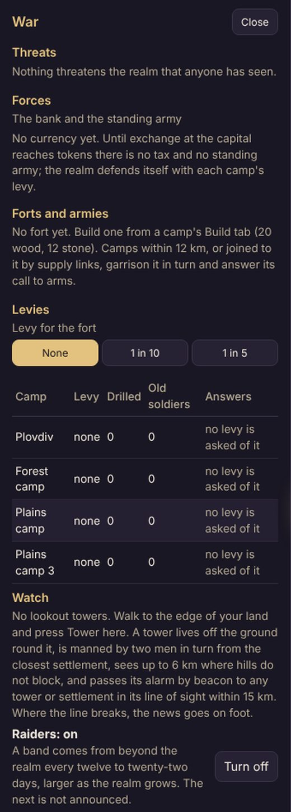
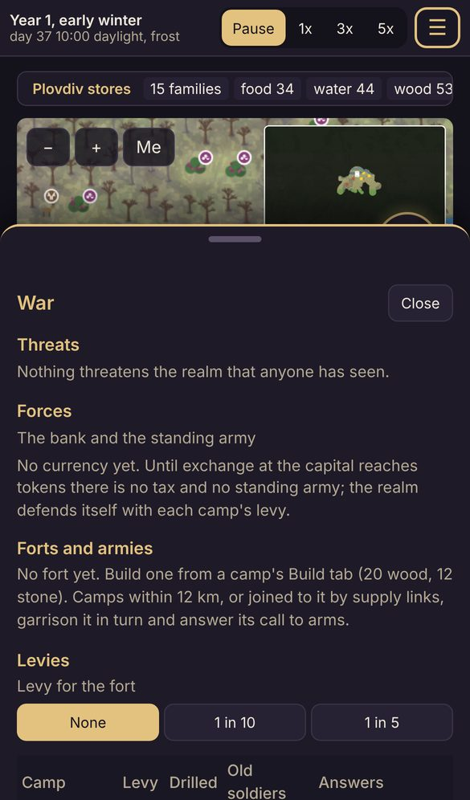
| Section | What is there |
|---|---|
| Threats | Raiders or strangers seen on the march; camps close to breaking a bond (with Send relief); camps that broke away (with Invite back); camps that have outgrown their land; defiant camps. |
| Wars of the councils | Any civil war under way. |
| Forces | The bank and the standing army: hire, dismiss, wages. Then forts and armies: garrisons, raise, unit roles, march, stand down. |
| Levies | The realm levy rate, and a table per camp: its levy, people drilled at home, old soldiers, and what it would send (or why not). Tap a row to open the camp. |
| Watch | Towers and beacons, raiders reported, raiders on/off, and a test raid. |
| Strangers | Each stranger people you have seen: trade, bad blood, favour, land hunger and Send a gift. Then the Strangers met table: bands, flags, where they come from, how often they came, what they took, how often they were beaten, and their leader if known. |
| Battles | The last six fights, each with a Report. |

Levies, soldiers and forts
Levies
- Each camp's levy share (Settings, or the realm rate in War) is who it owes when called.
- Village drill: the levy share practises in the evening hours and reaches basic training in about a year. It stops while the camp is hungry and fades slowly when practice stops.
- Old soldiers: standing soldiers who went home keep their training (never below a base level) and are called first.
- A muster itself trains a little. The wounded are not called.
Standing army
- Hire 1 / Hire 5 per camp, from people out of work, from camps at loyalty 40 or more. The bank must cover a season's wages for all soldiers.
- Wages (10 tokens per soldier per season) go to each soldier's home camp as income (+2 loyalty). Unpaid soldiers go home, and their camps lose 5 loyalty.
- Soldiers stand at a fort, drill every day, and walk paths when moved or marched (columns along trails).
Forts and towers
A fort gives camps nearby protection (+10 loyalty target), a garrison, and a place to muster. Towers see raiders approach, so defenders are not surprised.
How a fight is decided
There are no unit scores. Every fighter is a real person with a weapon, armour, skill and nerve. A fight on a 150 m field runs: archers and slingers shoot as the sides close, defenders meet the attackers in the last 60 m, javelins are thrown at 20 m, then melee blows land at the same time on both sides. Lines wrap round the ends; walls (×1.5) and fences or high ground (×1.2) favour defenders. When too many have fallen a side breaks and the routed are chased.
| Weapon | Character |
|---|---|
| Spear | Reach 2, damage 3.2, holds the line better |
| War hammer | Damage 5, slow (0.7), punches through armour (1.5) |
| Battle axe | Damage 4.5, some armour penetration |
| Hooked blade | Fast (1.2) |
| Harpoon | Thrown at 25 m for 4 damage |
| Bow | Range 120 m, 3 per shot, 12 shots |
| Sling | Range 90 m, 2.5 per shot, 20 stones |
| Townsfolk tools | Felling axes, mauls, picks and hammers, hunting spears or bows, sickles, fish spears, household axes and adzes, else knives: at 85% of a made weapon |
- Metal improves weapons: copper ×1.1, bronze ×1.25, iron ×1.3.
- Armour: hide 1, coats 2, scale 3.5 points; each point not pierced cuts damage by 8%. A shield blocks 15% (20% with a boss).
- Skill grows with battles survived and drill; age wears it down. Aim grows with hunting, battles and drill. Nerve comes from fighting at home, a chief, battles, drill, and suffers in hunger.
- The wounded rest at home and fight at 6 of 10 strength if they must.
- Reports are optional: one line in Messages, with a Report button for the account.
Civil war
The king does not start or settle wars between councils. When bad blood between two camps of the same realm reaches 80 and one side is ready to fight, a war of the councils begins.
- Other camps choose sides by their ties. If the capital joins, the other side loses 20 loyalty.
- War levies walk to each side's leading camp; sides take turns to march, only with at least 0.6 of the defenders' strength. A winner takes 30% of the camp's food and is marked warlike. No supply flows between sides; camps at war refuse the crown's levy.
- Endings: a two-win lead, both sides worn out (or 36 days), or elders of a camp tied to both broker a peace.
- The defeated splinter: a new people with the same history and traditions, but its own flag and dress. Too few for a council (under 6), they scatter as wanderers. Enough, and they settle far from everyone as a realm of their own, which may later rejoin.
Raider bands
Turn raiders on in the War tab's Watch section. Raiders are peoples from beyond the map edge, not faceless numbers.
- Identity: each band has a name, a flag (an emblem on a colour), and weapons from the land beyond its edge: woods give stone axes and short bows; marsh and river give fish spears; hills and open ground give spears, slings or javelins.
- They come back: about two raids in three are a known band returning. A band grows with wins, shrinks with losses and the wounded it carries, and breaks up if beaten down far enough. A raid with 35% or more wounded turns for home.
- War leader and temper: bold (quick to attack), wary (only where sure), greedy (drawn to full stores), vengeful (comes back for camps that beat it).
- Memory: a band fears camps that beat it, unless its leader is vengeful.
- What you learn: at first sight, only flag, numbers, weapons and the edge they came from. The leader's name and temper come from the fallen and the wounded after a fight.
Settled strangers
- Taking a camp: after a won raid a band may stay, if it still has 6 or more men and the townsfolk left are fewer than about half its number. A bold or greedy leader is likelier to stay.
- The camp becomes a new people under the band's name and flag, ruled by a chief, warlike, and outside the realm. Its links to your camps are cut. Half the surviving townsfolk flee to your nearest camp; the rest stay.
- Raiding from home: a settled band raids with its own people, up to 40% of them; the dead do not come back.
- If your seat falls: you flee to the nearest camp still loyal (40+) and not at war, which becomes your seat; every camp loses 10 loyalty. If none is left, King settings offers Begin again here or Retire.
- Taking it back: march an army on it ("March on X (held by the Y)"). If you win, it rejoins under a council at loyalty 30.
- Conquest: any stranger camp you have seen can be marched on. A win brings it under the crown, keeping its people and ways, at loyalty 15 and resentful.
Trade, favour and joining
Favour is how each stranger people feels about the crown, from hostile to warm (−100 to 100), shown in the War tab. It changes only through events:
| Event | Favour |
|---|---|
| Trade agreed | +10 |
| Each day of two-way trade | +0.5 (+1 while they are hungry) |
| A gift (Send a gift) | +15 (+5 to a greedy leader asking again) |
| Trade refused | −5 |
| Their failed raid or march | −5 |
| You conquer one of their camps | −40 |
- Asking to trade: a stranger camp that is short, hasn't raided in 12 days, and whose leader isn't vengeful asks your nearest camp (within 20 km). That council accepts if bad blood is under 25, it isn't hungry and its loyalty is 20+. Otherwise it refuses and says why.
- Peace: a band that trades both ways with the realm does not raid it.
- Gifts: 30 food or 20 tokens; eases bad blood by 20 for all their camps.
- Joining the crown: with little bad blood (under 15), a leader who isn't vengeful, and either favour 60+ while trading or favour 40+ while land-hungry. All their camps join at loyalty 50, keeping their people, ways and flag.
Land hunger
A full or mixed map is not an ending: it is a standoff that ends in war or in union.
- At each season, a camp with a council and 12 or more families that cannot find free ground to found a new camp becomes land-hungry. Strangers only become land-hungry a year after they were taken or founded.
- Its bad blood with the nearest camp of another realm (within 30 km) grows each season.
- A crowded council of yours with heavy bad blood toward strangers raises a levy of one in ten on itself. Marching stays your choice.
- Strangers march when they are ruled by a chief, land-hungry, low in favour (under 20), with bad blood 60+ toward one of your camps, and they can see they have the numbers: at least 0.8 of the defenders they can see plus any of your armies within 30 km. At most once a season. A win takes the camp.
Seasons and disasters
- Frost: berries and plots all but stop growing, huts leak warmth and fires burn more wood. Messages warn a few days ahead. Store wood and food, and raise solid houses.
- Fire, flood, earthquake: they happen, damage stores and buildings, and change how people choose to build (a burned-out camp may turn to stone; one shaken by an earthquake may turn back to timber).
- Hunger stops village drill, makes camps exempt from tax, raises the chance of splits, and makes strangers ask to trade.
Winning and losing
There is no score. A reign ends well when the valley is full and every camp in it answers to the crown. An ending is a state the valley reaches; each is reached once, written to the chronicle, and opens the end screen, where you choose Play on or End the reign.
Where a reign can go
| The valley | Result |
|---|---|
| Full, and every camp is of your people (the first settlement, its daughters, and branches that broke away and came back) | Ending: One people fills the valley. The best. |
| Full, and every camp answers to the crown, though not all are of one people | Ending: Many peoples, one crown. Also a full success. |
| Full, but some camps stand outside the realm (strangers, or camps that broke away) | Not an ending. A standoff: land hunger grows until it ends in war or in union (Land hunger). |
| Every camp of the realm is lost, taken, broken away or abandoned | Ending: No camp answers to the crown. The reign has failed. King settings offers Begin again here or Retire. |
| You retire, or end the reign from the end screen | Ending: The king lays down the crown. |
"Full" means no free ground is left anywhere that could feed a new camp. Map-full endings are checked at each change of season; losing the realm is checked daily.
How to win
- Fill the land. Found camps yourself (the Settle/Found icon) and give councils the mandate to found their own. The King panel shows how much of the dry ground the realm's grants cover.
- Keep your camps. Watch loyalty and bad blood. Send relief to camps that are short, honour the wavering, mediate between camps that quarrel, and Invite back any that break away.
- Bring the outsiders in. Every camp outside the crown blocks both good endings. Win strangers with trade, gifts and favour until they join; or march on them.
- Don't lose the seat. If your capital falls, the king flees to the nearest loyal camp (loyalty 40+, not at war), which becomes the seat, and every camp loses 10 loyalty.
How a reign is lost
- Splits that are never mended: camps break away over bad blood and unmet requests (Tension and splits).
- Civil wars between your councils, whose losers splinter into new peoples (Civil war).
- Raids and conquest: bands that take camps and settle in them, then raid and march from there (Settled strangers).
- Hunger and cold that empty camps (Seasons and disasters).

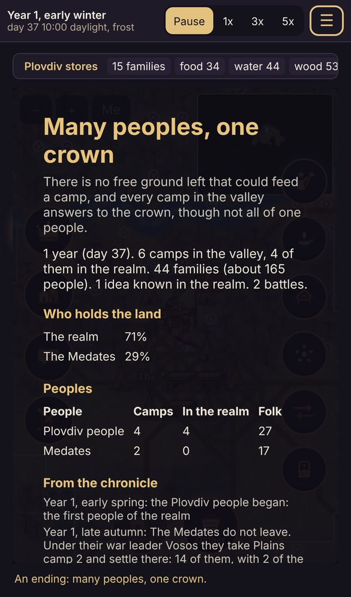
- The end screen shows years, camps, people, ideas known and battles; who holds the land; each people's camps and population; endings reached; and the last major chronicle entries. Nothing on it is a score.
- Play on closes it: you can still reach another ending. End the reign retires the king and saves a record of the reign in this browser, then offers Watch the valley or Start a new game.
- The king does not age or die: he is symbolic. The settlements of the realm are what matter.
Maps
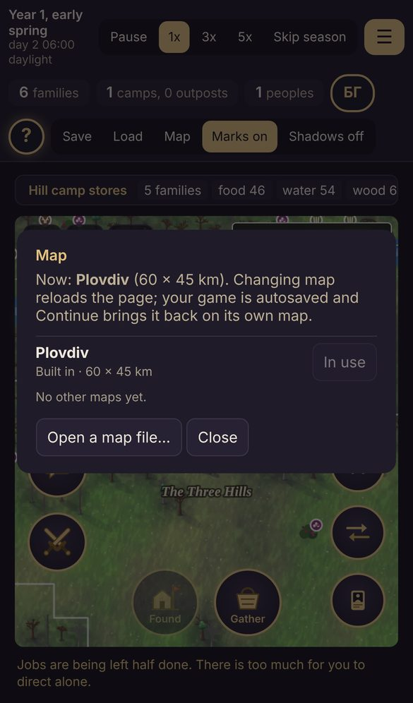
Valley plays on real ground. Plovdiv (60 × 45 km at 100 m a tile) is built in, and more maps are released as map files.
- Map (top bar, or ☰ on a phone) lists Plovdiv, the maps published on the site, and maps already opened on this device.
- Open a map file… loads a
.valleymapfile you have downloaded; it is then kept on this device. - A shared link can open a map directly.
- Changing map reloads the page. Your game is autosaved first, and Continue takes you back to it on its own map.
- Every save remembers its map. Loading a save made on another map switches to that map first.
Saving and loading
- The game saves itself in your browser every few minutes and at each change of season. Continue in the top bar picks it up.
- Save downloads the game as a file; Load opens one, on any device.
- Saves from older versions still load: new features are added as optional data.
- Each save remembers which map it was played on (see Maps).
Visit counts: the live site counts visits and a few game milestones (opening the game, founding a first camp, forming a council, reaching an ending, switching language) with GoatCounter. It uses no cookies and records nothing personal: only totals, with country, browser and screen size.
Glossary
| Term | Meaning |
|---|---|
| Adrift | A camp that has split away from the realm. |
| Bad blood | Grievance between two camps. |
| Band | Raiders from beyond the map edge, with a name, flag and war leader. |
| Capital / seat | The camp the king rules from. |
| Council / chief | Who decides in a camp. |
| Drill | Training, held by each person; it makes better fighters. |
| Favour | A stranger people's goodwill toward the crown. |
| Family | The unit of population: a working man with his wife, children and elders, shown as one figure. |
| Grant / reach | A camp's fixed land (solid line) and how far it works (dashed line). |
| Land-hungry | A crowded camp with no free ground left to found on. |
| Levy | The share of adults a camp owes when the crown calls. |
| Loyalty | A camp's loyalty to the crown, 0 to 100. |
| Mandate | A people's right to found new camps on its own. |
| Old soldier | A former standing soldier at home, called first in a levy. |
| Outpost | A work crew on ground that can't feed a camp. |
| Root | The people a split-off people came from. |
| Royal store | Tax in kind at the seat, before tokens. |
| Splinter | A defeated side of a civil war, turned into its own people. |
| Stranger | Any people outside your realm. |
| Tokens / the bank | Currency, once the realm uses it, and the crown's holding of it. |
| Warlike | A camp that has taken by force; others remember it. |